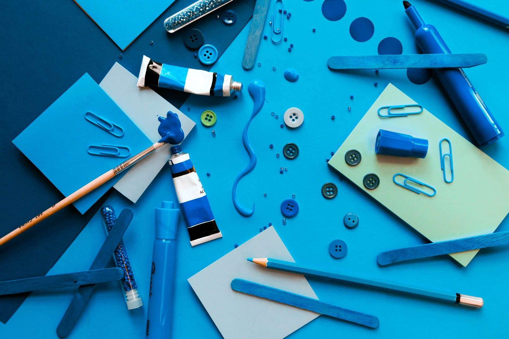

Sobre mi
I have been working in the fields of UX and User Research for the last 6 years, with different tech companies in Latin America and Silicon Valley.
I act as a bridge between technically diverse teams such as Technology, Strategy and Design, and thrive in interdisciplinary teams and dynamic culture.
I love informing design decisions from data, and I’m passionate about designing and creating the technologies that will help us learn, heal and innovate in the future.


